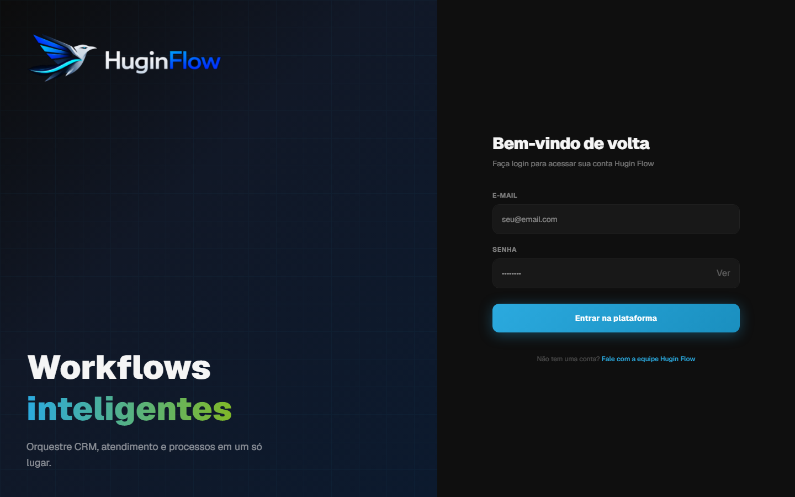
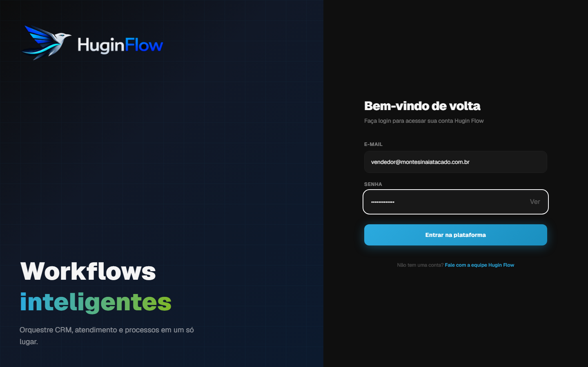
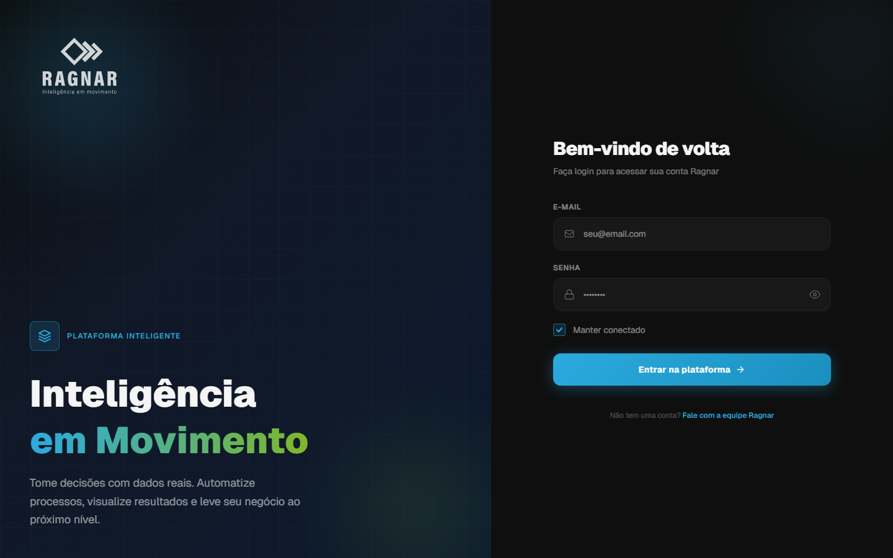
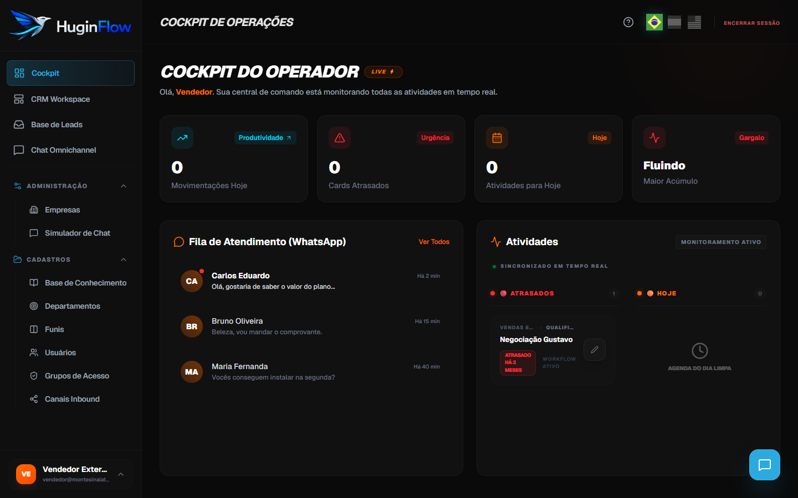
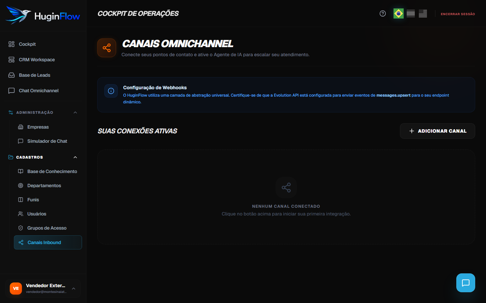
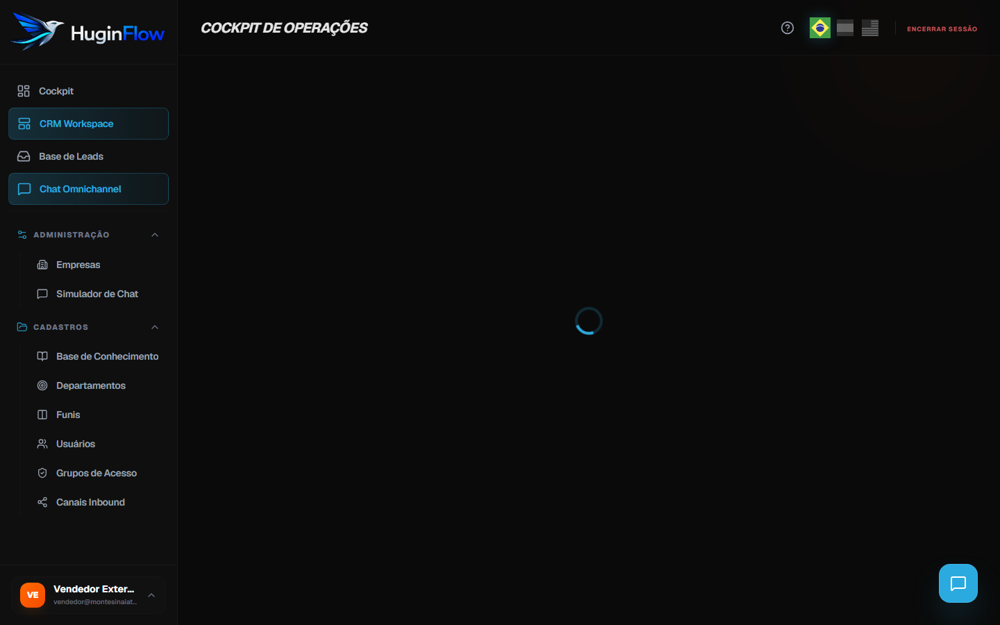
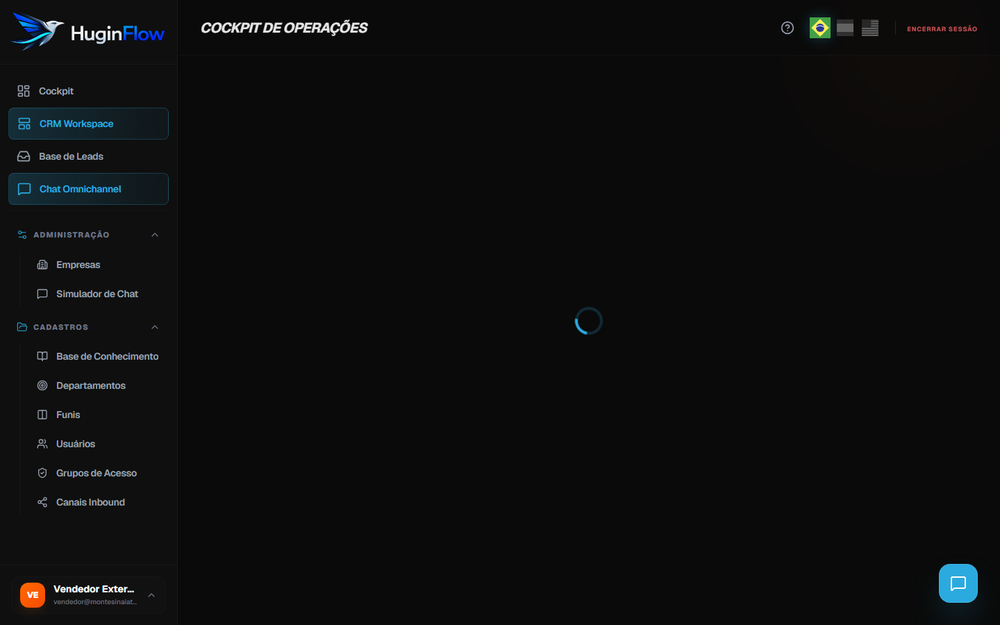
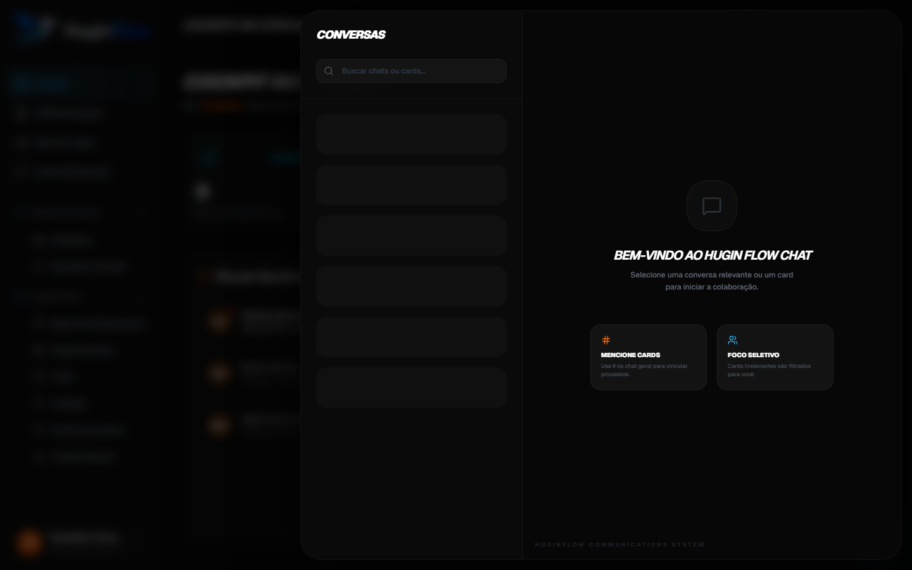
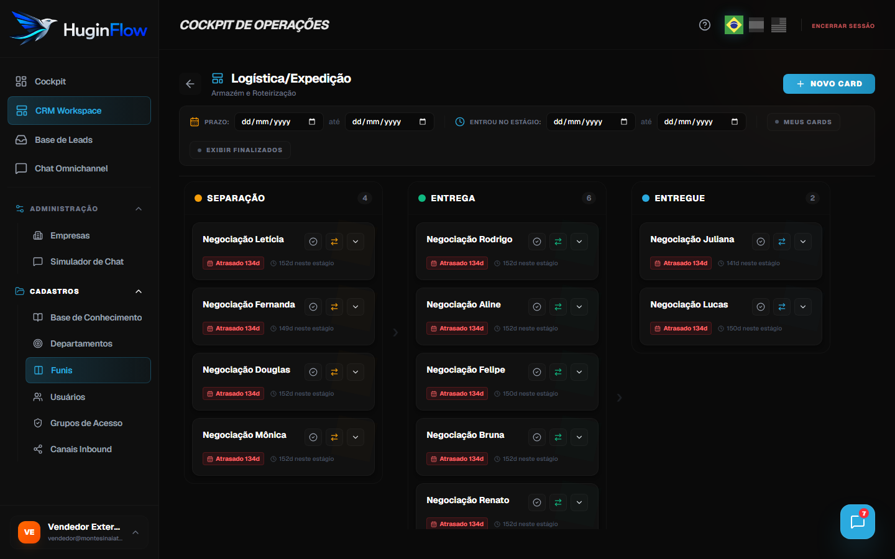

Manual do Usuário — HuginFlow
Guia passo a passo para operar o Cockpit: WhatsApp, chat omnichannel, chat interno da equipe, leads, funis, dashboard e configurações.
npm run manual:capture (com o app em dev) para gerar PNGs em docs/manual/img/steps/. Enquanto não houver captura, o manual exibe desenho esquemático (SVG).
1. Introdução
O HuginFlow é a plataforma de CRM e atendimento omnichannel da RN3. Pelo Cockpit você:
- Conecta canais (WhatsApp via Evolution API, landing pages)
- Atende clientes no chat em tempo real, com apoio do Agente de IA
- Colabora com a equipe no chat interno (global, cards e mensagens diretas)
- Gerencia leads, funis de vendas (Kanban) e base de conhecimento para a IA
- Administra usuários, permissões e estrutura da empresa (conforme seu perfil)
2. Perfis e permissões
Cada usuário possui um papel global e um grupo de acesso que define o que pode ver e fazer.
| Papel | Descrição | Exemplos de acesso |
|---|---|---|
| Superadmin | Administrador da plataforma (todas as empresas) | Empresas, todos os funis, configuração global |
| Admin | Gestor da empresa | Usuários, grupos, canais, CRM completo |
| Operador | Atendimento e vendas no dia a dia | Chat, leads, funis (conforme grupo) |
| Visualizador | Somente leitura | Consulta sem editar (conforme grupo) |
Se aparecer a tela “Acesso Interditado” ou “Acesso Restrito”, seu grupo não tem permissão para aquela função. Peça ao administrador da empresa para ajustar em Grupos de Acesso.
3. Entrar no sistema
✓ Fazer login
- Abra o endereço do HuginFlow (produção:
https://app.huginflow.com/login).
Passo 1 — Tela de login - Informe seu e-mail cadastrado e sua senha.

Passo 2 — E-mail e senha - Clique em Entrar.
- Após autenticação, você será direcionado ao Cockpit.

Passo 4 — Painel inicial (conforme seu perfil)

3.1 Alterar senha
Qualquer usuário pode trocar a própria senha após o primeiro acesso.
- No rodapé do menu lateral, clique no seu nome / avatar.
- Selecione Alterar senha.
- Informe a senha atual e a nova senha (mínimo exigido pelo sistema).
- Salve e faça login novamente se solicitado.
4. Navegação no Cockpit
O menu lateral esquerdo concentra os módulos principais:
| Menu | Função |
|---|---|
| Cockpit | Painel inicial (métricas e atalhos por perfil) |
| CRM Workspace | Hub com atalhos para Funis, Leads e Canais |
| Funis | Pipelines de vendas em Kanban |
| Base de Leads | Lista e cadastro de contatos |
| Chat Omnichannel | Atendimento WhatsApp em tempo real |
| Canais Inbound | Conectar WhatsApp, landing pages, IA por canal |
| Simulador de Chat | Testar respostas da IA sem WhatsApp real |
| Base de Conhecimento | Textos e PDFs que alimentam o Agente de IA |
| Empresas / Departamentos / Grupos / Usuários | Administração (admin e superadmin) |

No canto inferior direito da tela há o botão flutuante de chat interno da equipe (ícone de mensagem). No topo do Cockpit, o ícone ? abre este manual.
5. Dashboard do Cockpit
A página inicial Cockpit exibe métricas conforme seu perfil:
| Perfil | O que você vê |
|---|---|
| Gestor | KPIs da empresa: leads, cards no funil, conversão, receita fechada, threads WhatsApp; gráfico com período (semana/mês) e métricas alternáveis. |
| Operador | Visão operacional: atalhos para chat, cards atribuídos e atividades do dia. |
| Superadmin | Panorama multi-empresa e indicadores globais da plataforma. |
📊 Usar o gráfico do gestor
- Abra Cockpit no menu.
- Selecione o período: Semana ou Mês.
- Alterne a métrica: Conversão, Entrada no funil, Receita fechada ou WhatsApp.
- Passe o mouse sobre os pontos do gráfico para ver detalhes do período.
5.1 Ajuda no aplicativo
Em qualquer tela do Cockpit, clique no ícone ? no canto superior direito (ao lado do seletor de idioma) para abrir este manual sem sair do sistema. Use Nova aba na página de ajuda se preferir consultar em janela separada.
6. Conectar WhatsApp (Evolution API)
Use esta operação na primeira configuração ou quando precisar de um número novo. Requer perfil com acesso a Canais Inbound.
📱 Nova conexão WhatsApp
- No menu, clique em Canais Inbound.
- Clique no botão + Nova Conexão (canto superior ou área de cards vazia).
- No assistente, escolha a categoria WhatsApp.
- Selecione o provedor Evolution API (WhatsApp Instância Baileys).
- Dê um nome ao canal (ex.: “WhatsApp Comercial”) e clique para iniciar a conexão.
- Aguarde o QR Code aparecer na tela (pode levar alguns segundos; use “Atualizar QR” se necessário).
- No celular: WhatsApp → Aparelhos conectados → Conectar aparelho → escaneie o QR.
- Quando conectado, o status muda para Ativo (verde). O assistente exibe confirmação de sucesso.

7. Gerenciar canais
Cada canal aparece como um card na página Canais Inbound, com status visual:
7.1 Reconectar WhatsApp
- No card do canal desconectado, clique em ESTABELECER CONEXÃO.
- Escaneie o novo QR Code no celular (mesmo fluxo do WhatsApp).
- Use o ícone ↻ (atualizar) no card para sincronizar o status com o servidor.
7.2 Ativar ou desativar o Agente de IA
- No card do canal, localize o bloco Agente HuginFlow.
- Alterne o interruptor: IA em Operação (ligado) ou Desativado.
- Com IA ligada, mensagens inbound são triadas e respondidas automaticamente quando aplicável.
7.3 Roteamento para o funil (WhatsApp)
Defina para qual funil e etapa novos cards serão criados quando a IA ou o sistema registrar uma oportunidade vinda do WhatsApp.
- No card do canal WhatsApp, localize a seção de roteamento ou edição do canal.
- Selecione o funil de destino e a etapa inicial (ex.: PROSPECÇÃO).
- Salve. Novos cards inbound passam a cair nessa coluna do Kanban.
7.4 Remover um canal
- Clique no botão Remover (ícone lixeira) no card.
- Clique novamente para confirmar a exclusão.
- O canal é removido do HuginFlow e a instância é excluída no servidor Evolution do ambiente correto.

8. Chat Omnichannel
Central de atendimento para conversas vindas do WhatsApp (e outros canais configurados).
💬 Atender uma conversa
- Acesse Chat Omnichannel no menu lateral.
- Na coluna esquerda, use a busca por nome do lead ou telefone.
- Clique na conversa desejada — as mensagens aparecem à direita.
- Leia o histórico: mensagens do cliente à esquerda; respostas (IA ou atendente) à direita.
- Identifique o responsável pelo rótulo: Agente de IA (verde) ou nome do atendente (azul).
- Digite sua mensagem no campo inferior e pressione Enviar (ou Enter).
- A conversa atualiza automaticamente quando chegam novas mensagens.

Indicadores na lista de conversas:
- Ícone verde (robô) — conversa em atendimento pela IA
- Ícone laranja (pessoa) — conversa em gestão humana
8.1 Assumir conversa (takeover humano)
Quando a IA está atendendo, o operador pode assumir o controle respondendo diretamente no chat.
- Abra a conversa com status Atendimento Robotizado (indicador verde).

Chat omnichannel — conversa selecionada - Digite sua mensagem no campo inferior — o placeholder indica que a IA pausará ao enviar.
- Pressione Enviar. O status muda para Gestão Humana (laranja).
- Continue o atendimento manualmente; o cliente recebe suas mensagens pelo WhatsApp.
9. Chat interno da equipe
Comunicação entre colaboradores da mesma empresa — distinto do chat com clientes (WhatsApp). Use para alinhar operação, mencionar colegas e discutir cards.
9.1 Canal global da equipe
- Clique no botão flutuante de mensagem no canto inferior direito da tela.

Chat interno — painel lateral de conversas - Na aba de conversas, abra o Canal Geral da Equipe (broadcast para todos da empresa).
- Digite e envie mensagens visíveis a gestores e operadores da conta.
- Use o filtro Mencionados para ver apenas mensagens em que seu nome aparece.
- O botão # no cabeçalho alterna a exibição de trechos vindos de discussões de cards.
9.2 Menções e direcionar cards
- No campo de mensagem, digite
@para mencionar um colega — o nome vira[Nome Completo]na mensagem. - Digite
#para mencionar um card do CRM — o título vira[Card: Título](destaque laranja no chat). - Use isso para direcionar a equipe: ex. “@Maria, verifique [Card: Proposta ACME]”.
- Clique em uma referência de card para abrir o modal do card na aba correta.
9.3 Chat no card e mensagem direta
- Abra um card no Kanban → aba Chat Interno para discussão restrita àquele processo.
- Para falar em privado com um colega, use a busca no painel de conversas ou clique no ícone de mensagem ao lado do nome dele em uma thread.
- Conversas diretas (DM) aparecem na lista lateral com avatar e status online.
10. Base de leads
👤 Cadastrar um lead manualmente
- Acesse Base de Leads (menu ou CRM Workspace).
- Clique em + Novo Lead.
- Preencha nome, telefone/WhatsApp, e-mail e demais campos disponíveis.
- Salve o cadastro.
🔍 Buscar e editar leads
- Na Base de Leads, use a barra de busca (nome, telefone, e-mail).
- Clique no lead para abrir o detalhe ou use o ícone de editar na linha.
- Altere os dados e salve. Leads criados automaticamente pelo WhatsApp também aparecem aqui.
11. Funis (Kanban)
Organize oportunidades em colunas (estágios) e mova cards entre etapas do processo comercial.
📋 Criar um funil
- Acesse Funis no menu.
- Clique em + Novo Funil.
- Informe nome e descrição; configure as etapas (colunas) do pipeline.
- Salve e abra o funil para ver o quadro Kanban.
↔ Mover cards no Kanban
- Abra o funil desejado na lista.
- Arraste um card de uma coluna para outra (drag and drop).
- Clique em um card para ver detalhes, anexos e histórico (conforme permissão).
- Use os filtros superiores (prazo, “meus cards”, finalizados) para refinar a visão.

11.1 Detalhes do card
Clique em um card para abrir o modal com abas Dados & Resumo e Chat Interno.
✏ Editar, atribuir e anexar
- Editar Card — altere título, cliente, valor estimado e observações; salve.
- Atribuir — escolha outro membro da equipe como responsável pelo card.
- Anexos — envie arquivos (contratos, propostas) vinculados ao card.
- Transferir funil — mova o card para outro pipeline/etapa quando disponível.
✓ Finalizar ou excluir
- Finalizar — marca o card como concluído; ele sai do fluxo ativo (filtro “finalizados”).
- Excluir — remove o card permanentemente (requer permissão; use com cautela).
12. Base de conhecimento (IA)
Alimente o Agente de IA com informações da sua empresa. Quanto mais conteúdo relevante, melhores as respostas automáticas.
📚 Adicionar conteúdo
- Acesse Base de Conhecimento no menu.
- Clique em + Adicionar (ou equivalente no topo).
- Escolha o tipo: Texto (digite título e conteúdo) ou PDF (faça upload do arquivo).
- Salve. O item passa a ser usado pelo agente nas respostas do chat/WhatsApp.
🗑 Remover item
- Na lista de itens, localize o registro.
- Clique em excluir e confirme.
12.1 Baixar PDF enviado
- Na lista da Base de Conhecimento, localize o item do tipo arquivo.
- Clique no ícone de download na linha do item.
- O arquivo original (PDF ou DOCX) será baixado quando disponível no storage.
13. Canal Landing Page
Capture leads de formulários externos e encaminhe automaticamente para um estágio do funil.
- Em Canais Inbound, clique + Nova Conexão.
- Escolha Landing Page.
- Informe o nome do canal, selecione o funil e o estágio de destino.
- Após criar, copie o Token da Conexão exibido no card (botão copiar).
- Use esse token na integração da landing page externa conforme documentação técnica da RN3.
- Para alterar funil/estágio depois, use Editar Destino no card.
14. Simulador de chat
Teste o comportamento da IA sem enviar mensagens reais pelo WhatsApp.
- Acesse Simulador de Chat no menu.
- Digite mensagens como se fosse um cliente.
- Observe as respostas do agente com base na base de conhecimento configurada.
- Use para validar tom, conteúdo e fluxos antes de ativar a IA no canal real.
15. Usuários
Admin Gestão de equipe com acesso ao Cockpit.
➕ Convidar / criar usuário
- Acesse Usuários no menu.
- Clique em + Novo Usuário.
- Preencha nome, e-mail, senha inicial, empresa (superadmin) e grupo de acesso.
- Salve. O usuário recebe credenciais para login.
✏ Editar usuário
- Na lista, clique no usuário ou no ícone de editar.
- Altere dados, grupo ou status conforme necessário.
- Salve as alterações.
16. Grupos de acesso
Define o que cada equipe pode fazer: ver funis, editar leads, administrar usuários, etc.
- Acesse Grupos de Acesso.
- Crie um novo grupo ou edite um existente.
- Na matriz de permissões, marque view / create / edit / delete por módulo (funis, leads, chat, usuários…).
- Marque Grupo administrador se usuários do grupo devem ter poderes amplos na empresa.
- Salve e associe usuários ao grupo em Usuários.
17. Empresas e departamentos
Superadmin gerencia empresas (contas). Admin gerencia departamentos da própria empresa.
Empresas (superadmin)
- Menu Empresas → listar, criar ou editar cadastro da conta.
- Configure nome, status (ativo/inativo) e dados corporativos.
Departamentos
- Menu Departamentos → Novo Departamento.
- Informe nome e descrição; associe à estrutura interna da empresa.
- Use departamentos para organizar equipes e relatórios futuros.
18. Problemas comuns
| Sintoma | O que fazer |
|---|---|
| QR Code não aparece | Aguarde alguns segundos; clique em atualizar QR. Verifique se Evolution está online (contate suporte técnico). |
| Canal “Ativo” mas não chegam mensagens | Confirme webhook configurado na instância; em produção use suporte RN3. Operador: reporte ao admin. |
| Chat vazio | Envie uma mensagem de teste pelo WhatsApp conectado. Verifique se o lead foi criado na Base de Leads. |
| IA não responde | Verifique se Agente HuginFlow está ligado no card do canal e se há conteúdo na Base de Conhecimento. |
| “Acesso Interditado” | Seu grupo não tem permissão. Admin deve ajustar em Grupos de Acesso. |
| WhatsApp desconectou sozinho | Abra o card → ESTABELECER CONEXÃO → escaneie novo QR. Evite usar o mesmo número em outro aparelho simultaneamente. |
| Não vejo Financeiro / Contratos | Esses módulos são exclusivos da RN3 (superadmin). Gestores e operadores não têm acesso — comportamento esperado. |
| Chat interno não notifica colega | Use @nome na mensagem. Verifique se o colega abriu o painel flutuante de conversas. |
19. Vídeos tutoriais (opcional)
Quando disponíveis, tutoriais em vídeo aparecem abaixo. A equipe RN3 pode gerá-los com npm run manual:video (rascunho automático) ou gravar com Loom/OBS para narração.
20. Links úteis
| Recurso | Endereço / arquivo |
|---|---|
| App produção | https://app.huginflow.com |
| Login | https://app.huginflow.com/login |
| Manual (dentro do app) | Ícone ? no topo do Cockpit ou menu → /cockpit/ajuda |
| Doc ambientes (técnico) | Solicite à equipe RN3 |
| Deploy CI/CD | docs/deploy-vps-github-actions.md |
| Suporte RN3 | Contate o administrador da sua conta ou equipe técnica RN3 |